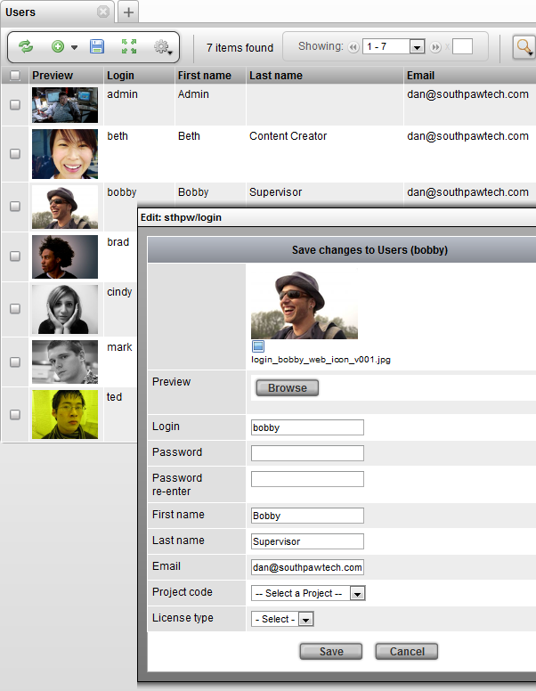
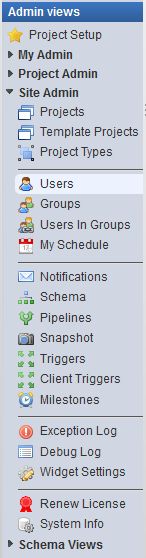
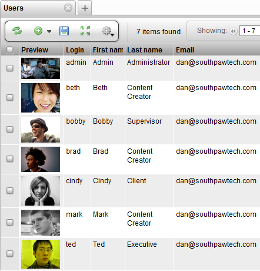

\1) First, open the Manage Users view under:
Project Startup → Manage Users
\2) In the Project Configuration view, the following tools are provided:
Activity | Displays the calendar for a count of the user’s: tasks due, check-in’s, notes and work hours. |
Groups | Displays the groups that the user has been assigned to. |
Security | [multiblock cell omitted] |
Edit | [multiblock cell omitted] |
Insert a New User

Users and Groups
Login access to TACTIC is controlled by a user login system. In TACTIC, users can also be assigned to groups, which are used to apply various access rules.
Note
ActiveDirectory/LDAP can be used as the authentication method. Please refer to the index for those instructions.
User logins are tracked, as well as what transactions they executed. This information allows for accountability throughout the system for all users (i.e. "who did what and when").
To manage and insert users, open the Users view under Admin View→Site Admin→Users.

This view shows the list of all TACTIC users in the system. You must add users here for TACTIC to recognize them. To insert a new user, click on the Insert button and fill out the appropriate fields.

To edit an existing user, right click on the row and select Edit from the context menu. The user’s password can be set here.
Group Assignment

How to Assign a User to a Group
1) In the Project Startup → Manager Users, click on the Groups button corresponding to row of the user to modify the group of.
2) In the Groups pop-up, add a check mark next to the group to assign the user to it. Hit Save to save changes.
Note
To create a new group, please go to the side bar and open the view:
Server → Groups.